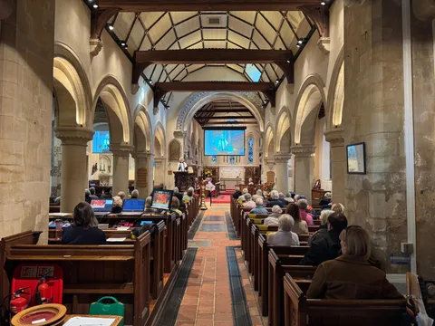
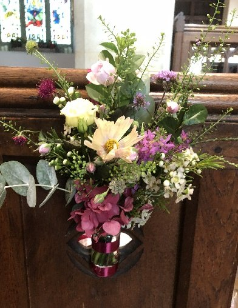

Everyone is welcome
Gather, pray and encourage one another
The parish describes worship as a time to celebrate God’s goodness, share prayer and fellowship, and take part in the life of the wider Church. Services include Holy Communion and other forms of worship.
Service patterns can change. Please check the Calendar for confirmed dates and times.
View the CalendarOur regular worship
What to expect on Sundays
A variety of services across our parish, with a warm welcome for all.

8:00am
Westhumble Chapel
Book of Common Prayer Holy Communion, normally on the 2nd and 4th Sundays of the month. Around 40 minutes: a quiet, contemplative start to Sunday.

1st Sunday · 10:00am
Family Service
Worship for all ages, enjoyed by the whole church family. Informal yet structured, with contemporary elements and lively interaction to help us learn and grow in faith.

2nd, 3rd and 4th Sundays · 10:00am
Holy Communion
Common Worship with Bible readings, a sermon and Communion, supported by our choir and organist. The priest and choir may wear robes. You are welcome whether or not you receive Communion.

5th Sunday · 10:00am
Morning Worship
Common Worship with hymns and a sermon, often including an interview or a focus on an aspect of our church life.
These are our usual service patterns. Please check the Calendar for confirmed dates and times, including any changes.
Coming with children?
Families are warmly welcome at all our services. A dedicated carpeted area and children’s resources help younger visitors share in worship.
Stay for a cup of tea
Refreshments are normally served after the main 10am Sunday service. It’s a lovely chance to meet people, make new friends and catch up with existing ones.
Through the week: Compline, or Night Prayer, is normally held at 7pm on the 1st and 3rd Tuesdays at St Michael’s. Check the Calendar for current dates.
Explore more
Find a service or take a next step
Explore Sunday worship, life events, prayer and practical information for visiting.

Baptism, wedding, funeral and candlelight details are decorative illustrations; service and chapel photographs show our parish.